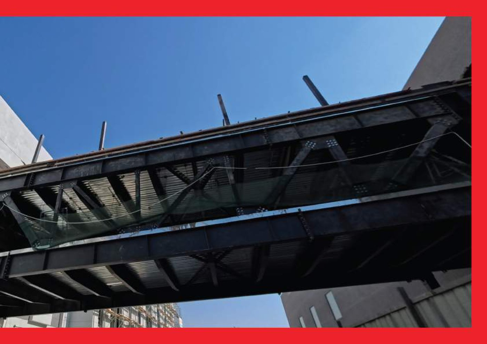

02
الرؤية
أن نصبح شريكًا رائدًا لحلول الحديد في المملكة العربية السعودية، معروفًا بالموثوقية وكفاءة التكلفة والتميز في التنفيذ، مع تقديم حلول مبتكرة وعالية الجودة ومستدامة.

شركة سعودية لحلول الحديد تخدم المقاولين والمطورين والعملاء الصناعيين، وتجمع بين الفهم الهندسي والتنفيذ العملي للمشاريع.
WELDEX شركة سعودية متخصصة في حلول الحديد الإنشائي والتصنيع وتسليم المشاريع المتكامل.
ندعم المقاولين والمطورين والعملاء الصناعيين بحلول موثوقة وفعالة من حيث التكلفة وعالية الجودة، ومصممة وفق متطلبات المشروع.
يجمع نهجنا بين الخبرة الهندسية وشبكة توريد دولية قوية، ما يدعم تقديم حلول تنافسية وقابلة للتوسع في مختلف مناطق المملكة.
تحميل ملف الشركة ←أن نصبح شريكًا رائدًا لحلول الحديد في المملكة العربية السعودية، معروفًا بالموثوقية وكفاءة التكلفة والتميز في التنفيذ، مع تقديم حلول مبتكرة وعالية الجودة ومستدامة.
تقديم حلول حديد هندسية تحسن التكلفة وتعزز الأداء وتدعم نجاح تسليم المشروع، مع الحفاظ على معايير عالية للجودة والسلامة والاستدامة.
CEO • Executive Manager
Technical Office Manager • Detailing • Structural Design
QC Manager • QC Engineer • Architecture Engineer
Sales Manager • Sales Engineer
Procurement Manager • Procurement Officer
Production Manager • Warehouse • Production Officers
Erection Manager • Installation Supervisors
Accounting • HR
اكتشف خدماتنا وخبراتنا في المشاريع ومنهج هندسة القيمة.